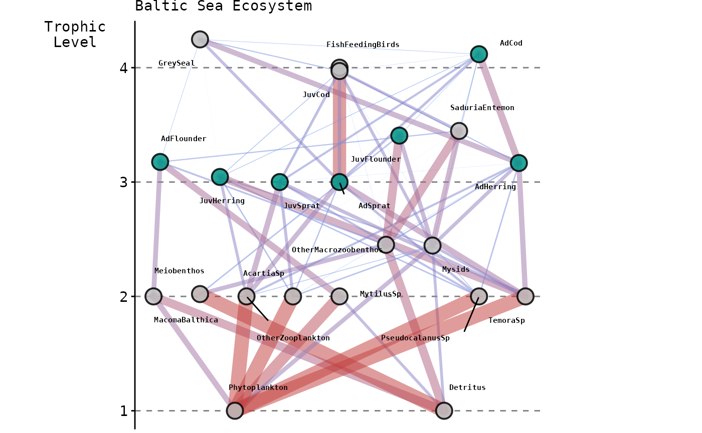
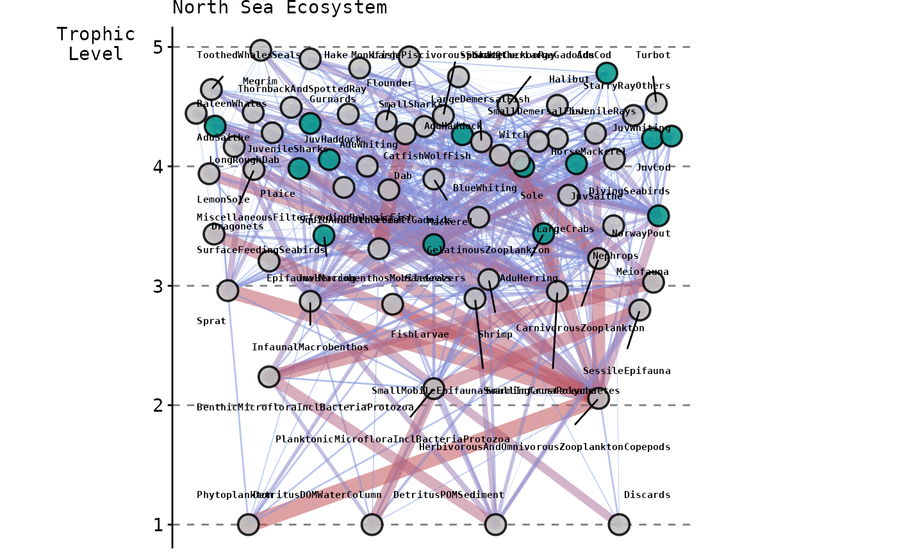
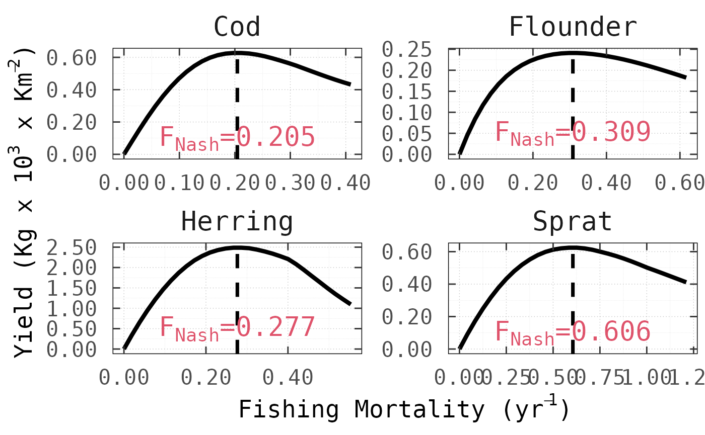
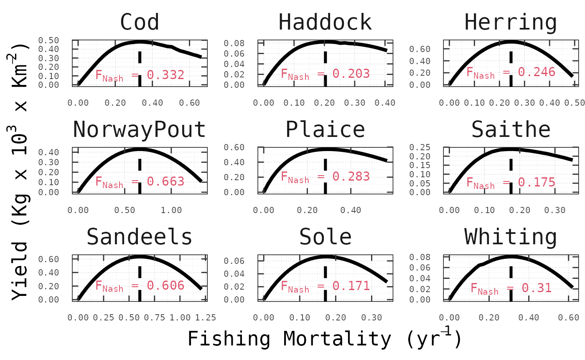
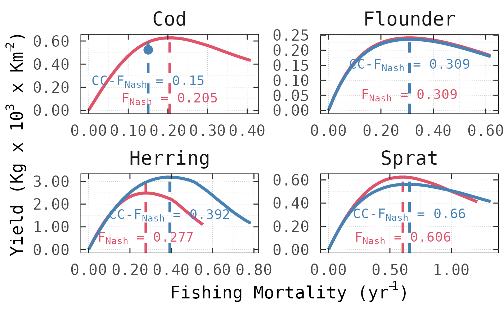
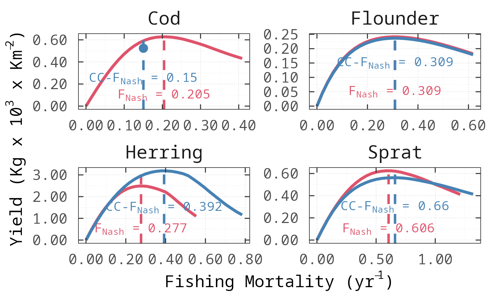
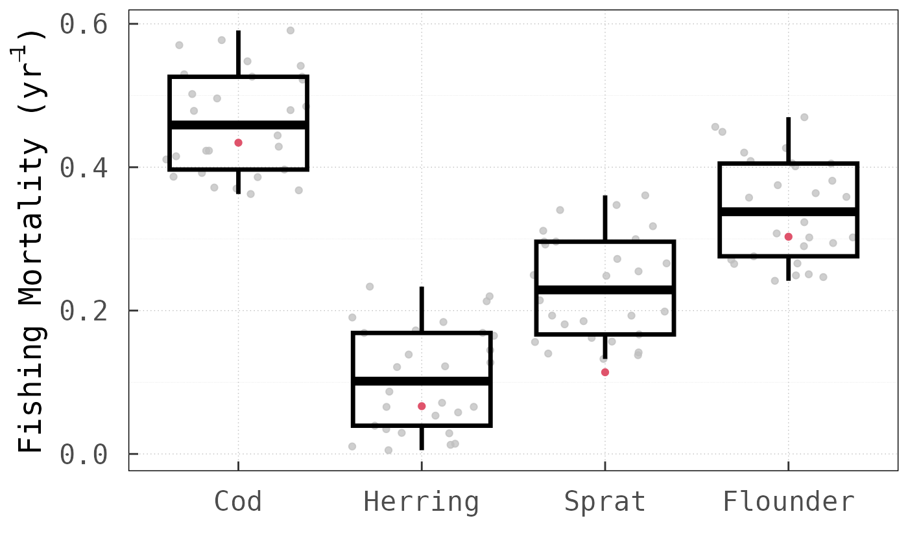
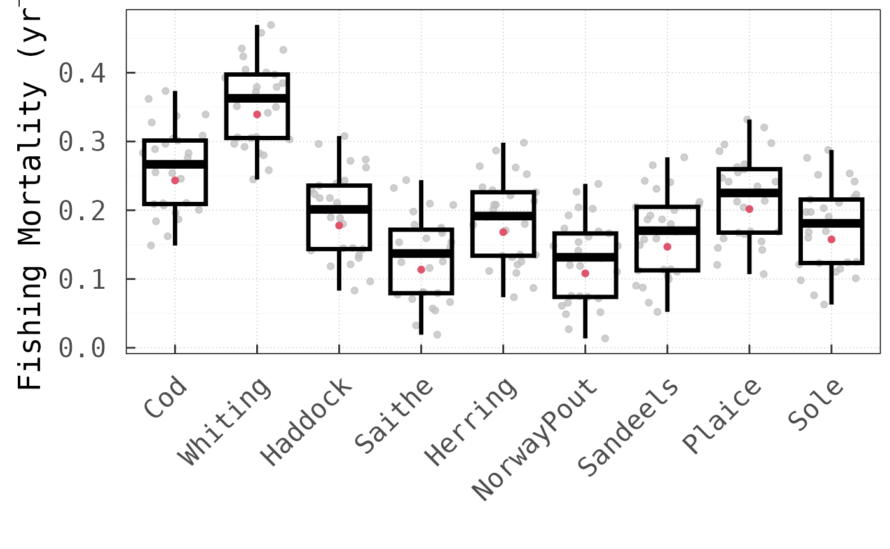
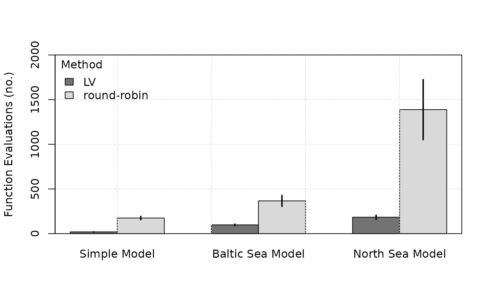

An efficient tool to find multispecies MSY for interacting fish stocks
T. J. Del
Santo O’Neill1,*, Axel G. Rossberg1 and Robert B.
Thorpe2
1School of Biological and
Behavioural Sciences, Queen Mary University of London, London, UK;
2Fisheries and Ecosystem Management Advice, Cefas Laboratory,
Lowestoft, Suffolk, UK.
vignettes/FnFpaper.Rmd
FnFpaper.RmdDisclaimer
The following vignette serves two main purposes. It is (i) a
step-by-step introduction to the nash package, and
(ii) a reproducible script where the code for the original
article https://doi.org/10.1111/faf.12817
is archived.
Benchmark Models
In the original Fish and Fisheries article, the
nash package was applied to three models of distinct
complexity with regards to the number of species
()
within the stock-complex for which
is computed. These are, (i) Taylor and Crizer (2005) modified two-species competitive
Lotka-Volterra (LV) model; and (ii) ICES (2017) Baltic Sea and (iii) ICES (2016) North
Sea Ecopath with Ecosim (Christensen and Walters 2004; Steenbeek et al. 2016) models, both
of which were ported into R using the Rpath https://github.com/NOAA-EDAB/Rpath (Aydin, Lucey, and Gaichas
2016; Lucey, Gaichas, and Aydin
2020).
Complexity increases with respect to the number of interacting
species and trophic links modelled; from
species and
links for the modified LV model to
and
compartments and
and
links for the Baltic Sea and North Sea models, respectively. The
following snapshots represent these latter two EwE models
showcasing as non-grey nodes the
species with commercial value whose harvesting rates we optimised,
whilst capturing its effect on the entire food web.


It is important to note that both the Baltic and North Sea models are used as ‘key-run’ parameterisations peer-reviewed by the Working Group on Multispecies Assessment Methods (WGSAM) to inform management advice provided by the International Council for the Exploration of the Sea (ICES).
Running nash with Rpath models
To support users employing Rpath as their operating
model, a built-in function fn_rpath has been included
within the nash package to provide the input function
fn. The function is capable of transparently handling
models in which all or some of the exploited compartments are stage
structured (e.g. all species in the Baltic Sea model and
Cod, Whiting, Haddock, Saithe and Herring in the North Sea model).
### NOT EVALUATING THIS CHUNK GIVEN THE RUNNING TIME NEEDED TO FIND NE FOR ###
### COMPLEX ECOLOGICAL MODELS. IT IS POSSIBLE TO REPRODUCE THE RESULTS BY ###
### COPY/PASTING IN YOUR LOCAL MACHINE. ###
# Load libraries
library(nash)
library(Rpath)
# Load the BS model
load("BalticSeaModel.RData")
# Commercial stock-complex
spp = c("AdCod", "AdHerring", "AdSprat", "AdFlounder")
# Initialising search with last year of data Fs
par <- as.numeric(tail(Rsim.model$fishing$ForcedFRate[, spp], n = 1))
# Running nash via LV
nash.eq.LV.BS <- nash(
par = par,
fn = fn_rpath,
aged.str = TRUE,
data.years = 10,
rsim.mod = Rsim.model,
IDnames = c(
"JuvCod",
"AdCod",
"JuvHerring",
"AdHerring",
"JuvSprat",
"AdSprat",
"JuvFlounder",
"AdFlounder"
),
method = "LV",
yield.curves = TRUE,
rpath.params = Rpath.parameters,
avg.window = 250,
simul.years = 500,
integration.method = "AB",
conv.criterion = 0.01,
F.increase = 0.01
)
# Load the NS model
load("NorthSeaModel.RData")
# Commercial stock-complex
spp = c(
"AduCod",
"AduWhiting",
"AduHaddock",
"AduSaithe",
"AduHerring",
"NorwayPout",
"Sandeels",
"Plaice",
"Sole"
)
# Initialising search with last year of data Fs
par <- Rsim.model$fishing$ForcedFRate[sim.years, spp]
# Running nash via LV
nash.eq.LV.NS <- nash(
par = par,
fn = fn_rpath,
aged.str = TRUE,
data.years = 23,
rsim.mod = Rsim.model,
IDnames = c(
"JuvCod",
"AduCod",
"JuvWhiting",
"AduWhiting",
"JuvHaddock",
"AduHaddock",
"JuvSaithe",
"AduSaithe",
"JuvHerring",
"AduHerring",
"NorwayPout",
"Sandeels",
"Plaice",
"Sole"
),
method = "LV",
yield.curves = TRUE,
rpath.params = Rpath.parameters,
avg.window = 500,
simul.years = 1000,
integration.method = "AB",
conv.criterion = 0.01
)Once executed, it is possible to test whether NE-MSY has
been achieved by varying the fishing mortality on each stock in turn
while keeping the others fixed at
.
This is precisely what the following figures show for all
species and across models, where nash correctly computed
the Nash equilibrium fishing mortality rates (vertical dashed lines),
such that, for no stock the long-term yeld can be increased by
choosing a different fishing mortality.


Applying nash with Conservation
Constraints
It is conceivable that in some cases harvesting at the Nash
equilibrium might drive one or more species to extinction. Even if this
does not happen, some species might be placed under unacceptable risk
levels of stock collapse. Therefore, the nash package
includes an option that allows the user to explicitly incorporate
conservation constraints (Matsuda and Abrams 2006), specifying
a conservation biomass threshold Bcons below which stock
sizes are not permitted to fall.
We showcase this functionality with the Baltic Sea ecosystem by adding a conservation constraint for the biomass of Cod; which we chose arbitrarily by holding Cod above the original (i.e. ).
# Load the BS model and reference Nash equilibrium results
load("Data/BalticSeaModel.RData")
nash.eq.LV.BS <- readRDS("BS-NE-Fmsy-LV.rds")
# Commercial stock-complex
spp = c("AdCod", "AdHerring", "AdSprat", "AdFlounder")
# Initialising search with last year of data Fs
par <- as.numeric(tail(Rsim.model$fishing$ForcedFRate[, spp], n = 1))
# Baltic Sea Modelled Area
model.area <- 240669
# Target for Cod biomass = 1e5 (kg^3)
blim <-
c((
as.numeric(nash.eq.LV.BS$value / nash.eq.LV.BS$par)[1] + (100000 / model.area)
), 0, 0, 0)
# Running nash via LV
nash.eq.LV.BS.CC <- nash(
par = par,
fn = fn_rpath,
aged.str = TRUE,
data.years = 10,
rsim.mod = Rsim.model,
IDnames = c(
"JuvCod",
"AdCod",
"JuvHerring",
"AdHerring",
"JuvSprat",
"AdSprat",
"JuvFlounder",
"AdFlounder"
),
method = "LV",
yield.curves = FALSE,
rpath.params = Rpath.parameters,
avg.window = 250,
simul.years = sim.years,
integration.method = "RK4",
Bcons = blim,
track = TRUE,
conv.criterion = 0.01
)This results in a new set of values in which, as expected, the fishing pressure on Cod needs to be tapered from to with its consequent reduction in yield from to . Application of the constraint increased from to generating a surplus of but had little influence on the NE-MSY harvesting rates for Flounder. For Sprat, by contrast, the conservation constraint on Cod led to a higher of with a marginal reduction in yield of .

nash’s LV algorithm vs
round-robin
A key advantage of the LV method over the simple
round-robin method, that is, sequential optimisation of
each
until convergence is reached, is that it requires much less computation
time, especially for complex ecological communities. As a
platform-independent metric of performance, we compared the number of
objective function evaluations between the two methods. For this
analysis, we applied both methods across the three tested models with
different initial harvesting rate values.



In all cases, the LV method outperformed the
round-robin method for the same convergence threshold (set
to a value of
for this analysis). Noteworthy is, in particular, that for the North Sea
model, the LV method requires only
times more function evaluations than for the Baltic Sea model, even
though the dimension of the
vector increases by
from
to
.
Using the round-robin method, by comparison, the number of
function evaluations increases
-fold.
